Customizers
-
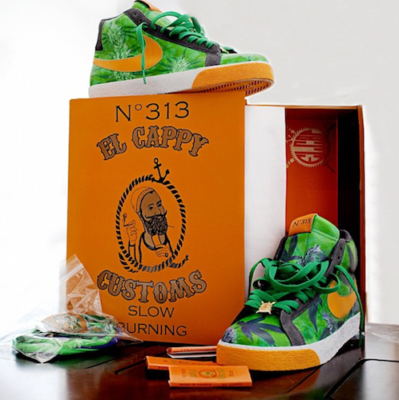
El Cappy
Mr. one-of-one himself, Eric Lowry has made a name for himself by never recreating his designs. In a custom sneaker culture where colorflips and blacked out midsoles are currently in high demand, El Cappy chooses originality instead of mass producing generic copies.
-
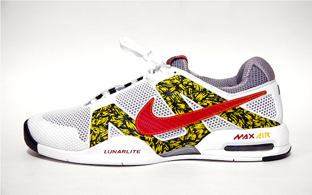
C2 Customs
How many artists do you know to have made it into Time Magazine by age 15? Probably only one, and that's Chris Hui. He began customizing $2.50 shoes from his local Goodwill and worked his way up to creating pairs for Kanye West, MLB first baseman Prince Fielder, and Lebron James. He now has over 400 pairs logged, numerous magazine features including our own, television appearances including NBC's Last Call with Carson Daly, and he was selected as an Apple Inc. "Student Rockstar Learner." Chris now has a degree in marketing and works for Adidas, not too shabby for a kid who started painting thrift shop kicks.
-
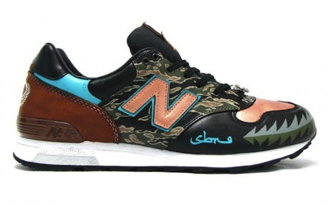
SBTG
Anyone who knows shoes, knows SBTG (Sabatoge) if only for his collaboration with Nike SB on the August 2006 release of the SBTG Dunk Low SB, but Mark Ong started as a hobbyist, painting shoes in his parents' kitchen. After winning a custom competition on Niketalk, the rest is history. Brand collaboration after brand collaboration, SBTG earned his spot as one of the "50 Most Influential People in Sneaker History."
-
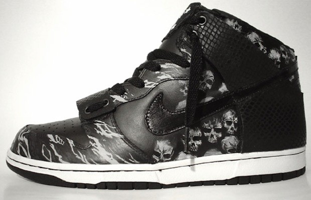
Methamphibian
One word to describe Methamphibian would be "pioneer." As one of The 30 Most Influential Niketalk Members of All Time as well as one of the 50 Most Influential People In Sneaker History (along with SBTG), Methamphibian was customizing before the hype. When he isn't collaborating with brands like the Hundreds, Meth still likes to get back to his roots. Brandon of Paintorthread.com calls him the Mache of his time, an inspiration for many to try their hand at creating unique footwear for the love and not the check, though he gets those too.
-
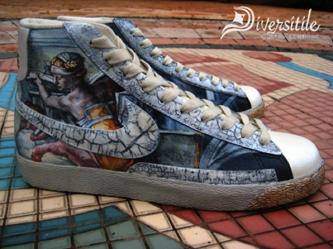
Diversitile
Diversitile brings a certain flare to customizing. A lot of their customs are inspired by other art forms, such as film, art nouveau, and music. They exist in the space between painted customs and full reconstructions, often utilizing textures and accessories in work that is distinctly their own.
-
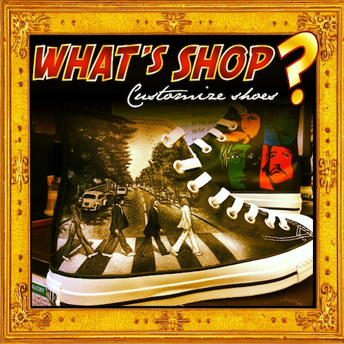
What's Shop
This Thailand-based custom shoe company does not get the attention it deserves. Dealing mostly with canvas shoes, What's Shop paints everything from superheroes to life-like portraits and colorful landscapes with an incredible attention to detail.
-
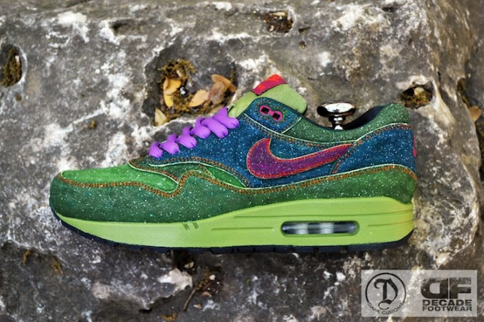
Dank Customs
Jake Danklefs of Dank Customs is winning the Customizer of the Year award so far according to his contemporary Emmanuelabor. Week after week he unveils the cleanest custom flips that leave even veteran customizers scratching their heads trying to figure out how they were executed. We've seen M.F. Doom, Skunk and De La Soul inspired Air Max 1s and Salmon Toe, Liberty and Kidrobot inspired Air Max 90s. Keep an eye out for Dank, we guarantee that you'll be seeing a lot of good work from him in the near future.
-
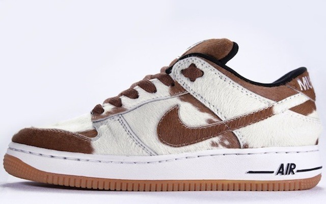
3R Customs
There are reconstructed sneakers and then there are 3r-constructed sneakers. 3R Customs (aka Jest3r) is one of the originators of the craft and remains the teacher. His shoes are flawless and look factory made. Look at the images above and you'll see why he more than deserves a place on this list.
-
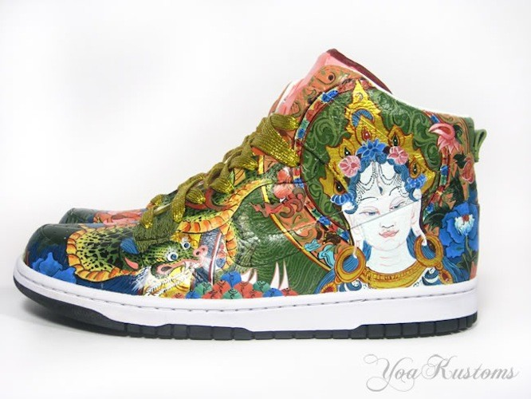
Yoakustoms
Amanda of Yoakustoms hasn't been as active as she was a few years ago, but that doesn't mean that people should sleep on her. Her work in the 2009 Clash of the Customizers competition alone deserves more attention than half of the work you see on blogs today, and if you see the teasers that she drops occasionally on Instagram, you know she hasn't lost her touch.
-
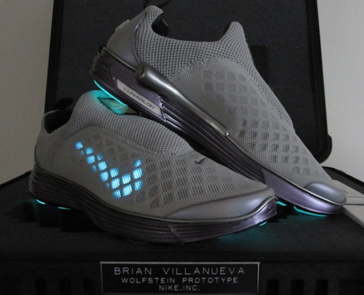
Brian Villanueva
What Brian Villanueva does with electronics is beyond sneaker customizing. The concept and end result seem simple enough, but there is more to it than sticking LEDs in a shoe and adding a battery. We would explain just how involved the process is, but we have no idea.
-
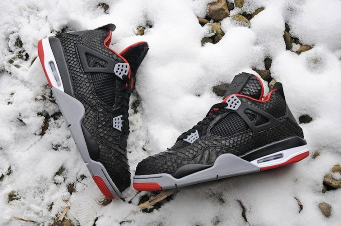
JBF Customs
These days if you think high-quality materials and customs, you think JBF. Jake has been at it for a number of years but his fanbase has grown exponentially in the past year or so with his use of snakeskins and other luxury materials on snapbacks and Jordans. Jake has a few process videos on Youtube and if you search hard enough you can probably find his step-by-step tutorial online, but he can't teach talent so don't get your hopes up.
-
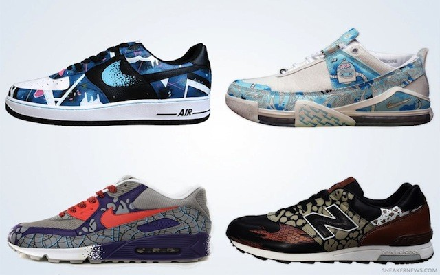
Sekure D
Australia's own, Sekure D has a laundry list of achievements under his belt so far with no signs of slowing down. He has been featured and interviewed in numerous magazines, from Sneaker Freaker and Sole Collector to Juxtapoz and Voyeur, and has appeared at various exhibitions and conventions around the world. Among his many apparel, mural, and art design clients are Puma, Jordan Brand, Footlocker, Adidas, Hype DC, and Globe, with whom he has done two sneaker collaborations. Sekure D also customizes vinyl toys and over time has built a relationship with Kidrobot.